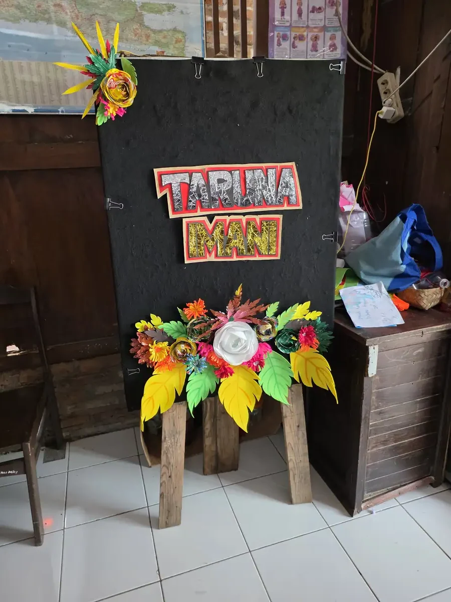
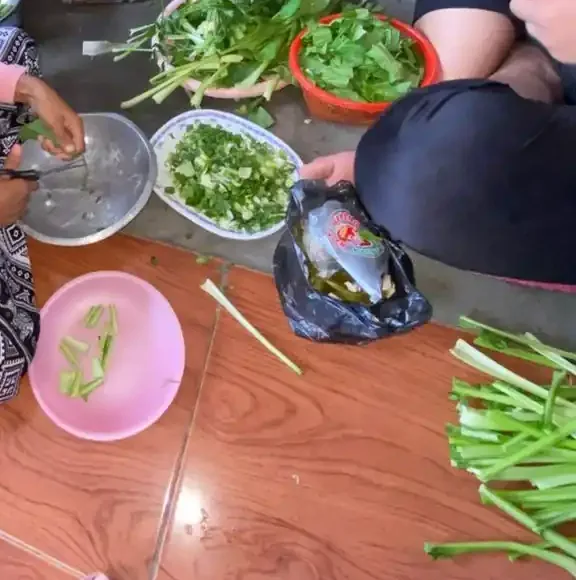
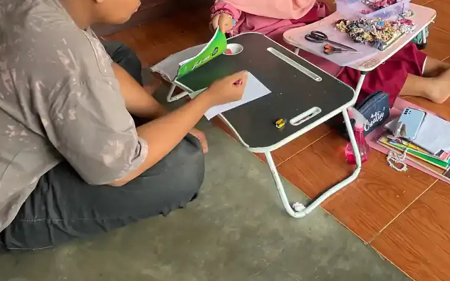

Jawaban singkat: SLB adalah singkatan dari Sekolah Luar Biasa. Namun, memahami kepanjangan saja belum cukup untuk menentukan sekolah yang tepat. Keluarga perlu melihat kebutuhan belajar, komunikasi, kemandirian, kesehatan, jarak, biaya, serta kesiapan lingkungan pendidikan. Artikel ini membantu orang tua membedakan istilah dan menyiapkan pertanyaan sebelum berkunjung.
Daftar Isi
SLB itu singkatan dari apa?
SLB merupakan singkatan dari Sekolah Luar Biasa. Istilah ini digunakan untuk menyebut satuan pendidikan yang menyiapkan layanan pendidikan khusus. Dalam percakapan sehari-hari, SLB sering dianggap sebagai tempat untuk semua anak penyandang disabilitas, padahal setiap sekolah dapat memiliki jenjang, program, tenaga pendidik, fasilitas, dan cara dukungan yang berbeda. Karena itu, arti singkatan perlu diikuti dengan pertanyaan yang lebih penting: dukungan seperti apa yang tersedia untuk anak tertentu?
Pendidikan khusus bukan sekadar memindahkan anak ke ruang yang berbeda. Tujuannya adalah membantu anak belajar, berkomunikasi, membangun kemandirian, dan berpartisipasi dalam kehidupan bersama. Prinsip ini sejalan dengan penjelasan UNICEF tentang pendidikan inklusif, yang menekankan kesempatan belajar dan berkembang bagi semua anak, termasuk anak penyandang disabilitas. Keluarga dapat memakai prinsip tersebut saat menilai apakah layanan sekolah menghargai potensi dan suara anak.

Apa fungsi SLB bagi peserta didik?
Fungsi SLB dapat mencakup pembelajaran akademik, pengembangan komunikasi, latihan kemandirian, keterampilan sosial, aktivitas fisik, serta persiapan mengikuti kegiatan masyarakat. Porsi setiap bagian tidak sama untuk semua anak. Seorang anak mungkin memerlukan dukungan komunikasi yang intensif, sementara anak lain lebih membutuhkan adaptasi materi, latihan mobilitas, atau struktur rutinitas yang konsisten. Program yang baik menjelaskan tujuan dalam bahasa yang dapat dipahami keluarga dan meninjau kemajuan secara berkala.
Orang tua sebaiknya meminta contoh target yang dapat diamati. Target seperti "menjadi lebih pintar" terlalu umum. Target yang lebih informatif misalnya anak dapat meminta bantuan dengan cara yang disepakati, menyelesaikan dua langkah kegiatan makan, mengikuti instruksi bergambar, atau berpindah ruang dengan dukungan yang makin berkurang. Target tetap perlu disusun oleh pendidik dan profesional yang berwenang setelah memahami anak, bukan diambil mentah dari daftar internet.

SLB, sekolah inklusi, dan pilihan pendidikan lain
SLB bukan satu-satunya pilihan. Sekolah inklusi berupaya membuat anak belajar bersama teman sebaya dengan dukungan dan penyesuaian yang diperlukan. Ada pula keluarga yang mempertimbangkan sekolah umum dengan dukungan tambahan, program pendidikan jarak jauh, atau kombinasi layanan pendidikan dan terapi. Tidak ada pilihan yang otomatis paling baik untuk semua anak. Pilihan perlu dilihat sebagai keputusan yang dapat dievaluasi, bukan label seumur hidup.
Saat membandingkan sekolah, lihat kecocokan antara kebutuhan anak dan dukungan yang benar-benar tersedia. UNICEF menjelaskan bahwa anak penyandang disabilitas membutuhkan kesempatan untuk berpartisipasi, bukan hanya hadir secara fisik. Tanyakan bagaimana sekolah mengikutsertakan anak dalam pelajaran, istirahat, kegiatan seni, olahraga, kunjungan, dan komunikasi dengan teman. Perhatikan pula apakah anak diberi cara untuk menyampaikan pilihan atau penolakan.
| Hal yang dibandingkan | Pertanyaan untuk keluarga | Bukti yang dicari |
|---|---|---|
| Tujuan belajar | Apa target tiga bulan pertama? | Target tertulis dan cara menilai kemajuan |
| Akses komunikasi | Bagaimana anak menyampaikan kebutuhan? | Gambar, gestur, alat bantu, atau strategi komunikasi |
| Partisipasi | Apakah anak mengikuti kegiatan kelas dan sekolah? | Penyesuaian aktivitas, bukan hanya ruang terpisah |
| Kolaborasi | Kapan keluarga menerima umpan balik? | Jadwal komunikasi dan catatan perkembangan |
Dasar hukum pendidikan khusus yang berlaku
Hak anak atas pendidikan khusus punya dasar hukum yang jelas. Pasal 5 ayat (2) Undang-Undang Nomor 20 Tahun 2003 tentang Sistem Pendidikan Nasional menyatakan bahwa warga negara yang memiliki kelainan fisik, emosional, mental, intelektual, dan/atau sosial berhak memperoleh pendidikan khusus. Pasal 32 ayat (1) menjelaskan bahwa pendidikan khusus adalah pendidikan bagi peserta didik yang memiliki tingkat kesulitan dalam mengikuti proses pembelajaran karena kelainan fisik, emosional, mental, sosial, dan/atau memiliki potensi kecerdasan dan bakat istimewa. Jadi, SLB hanyalah salah satu bentuk satuan pendidikan untuk melaksanakan hak tersebut.
Berikut peraturan yang sering dirujuk keluarga, beserta statusnya yang kami periksa di JDIH BPK (peraturan.bpk.go.id) pada 11 Oktober 2026.
| Peraturan | Isi pokok untuk keluarga | Status |
|---|---|---|
| UU 20/2003 tentang Sistem Pendidikan Nasional | Hak atas pendidikan khusus (Pasal 5 ayat 2) dan pengertian pendidikan khusus (Pasal 32 ayat 1) | Berlaku. Yang dicabut hanya Pasal 69, lewat UU 1/2023 |
| UU 8/2016 tentang Penyandang Disabilitas | Hak dan perlindungan penyandang disabilitas | Berlaku |
| PP 13/2020 tentang Akomodasi yang Layak untuk Peserta Didik Penyandang Disabilitas | Dasar kewajiban menyediakan penyesuaian agar peserta didik penyandang disabilitas dapat belajar | Berlaku |
| Permendikbudristek 48/2023 tentang Akomodasi yang Layak pada satuan pendidikan | Aturan pelaksana akomodasi yang layak, mulai 8 Agustus 2023, untuk satuan pendidikan dari PAUD formal sampai pendidikan tinggi | Berlaku. Mencabut Permendiknas 70/2009 dan Permen Ristekdikti 46/2017 |
Perhatikan bahwa Permendiknas Nomor 70 Tahun 2009 tentang pendidikan inklusi sudah dicabut oleh Permendikbudristek 48/2023. Banyak artikel lama dan brosur sekolah masih menyebutnya sebagai dasar hukum. Bila ada sekolah yang mengutip aturan itu, wajar menanyakan dasar hukum terbarunya.
Berapa jumlah SLB di Indonesia?
Kementerian Pendidikan Dasar dan Menengah menerbitkan tabel resmi Jumlah Program / Layanan SLB per Provinsi di portal data referensinya. Saat kami membukanya pada 11 Oktober 2026 (filter Semua Status, portal tidak mencantumkan tanggal pemutakhiran), jumlah dari seluruh baris wilayah adalah 7.311 program atau layanan SLB: TKLB 483, SDLB 2.401, SMPLB 2.293, dan SMLB 2.134. Angka ini menghitung program per jenjang, bukan jumlah gedung, karena satu SLB bisa membuka beberapa jenjang sekaligus. Angka dapat berubah seiring pemutakhiran data sekolah.
| Provinsi | TKLB | SDLB | SMPLB | SMLB | Total |
|---|---|---|---|---|---|
| D.I. Yogyakarta | 27 | 80 | 79 | 77 | 263 |
| Jawa Tengah | 21 | 186 | 181 | 172 | 560 |
| Jawa Timur | 137 | 367 | 359 | 343 | 1.206 |
| Jawa Barat | 113 | 400 | 395 | 390 | 1.298 |
Tabel di atas hanya empat provinsi sebagai contoh, diambil dari tabel yang sama. Sebaran antarprovinsi sangat berbeda, sehingga keluarga di daerah dengan SLB lebih sedikit sering perlu mempertimbangkan jarak, asrama, atau sekolah inklusi. Untuk mencari sekolah di dekat Anda, baca cara mencari SLB terdekat.
Cara menilai SLB sebelum mendaftar
Buat daftar pertanyaan sebelum kunjungan agar percakapan tidak berhenti pada biaya dan jadwal. Tanyakan jenjang yang tersedia, jumlah anak dalam kelas, latar belakang pendidik, pelatihan pendamping, sistem asesmen, dukungan perilaku positif, fasilitas sanitasi, akses kursi roda bila diperlukan, serta prosedur ketika anak sakit atau mengalami kelelahan. Mintalah izin untuk melihat satu kegiatan yang sedang berjalan, bukan hanya ruang kosong yang sudah ditata.
Amati bahasa yang digunakan staf. Apakah mereka menggambarkan anak melalui kekuatan dan kebutuhan dukungan, atau hanya menyebut masalah? Apakah mereka menjelaskan cara menjaga privasi data? Apakah anak diizinkan menolak aktivitas yang membuatnya tidak nyaman dengan cara yang aman? Jawaban atas pertanyaan ini sering lebih bermakna daripada brosur. Jika sekolah menjanjikan hasil pasti, meminta pembayaran besar sebelum asesmen, atau melarang orang tua bertanya, keluarga berhak meminta penjelasan tertulis dan mencari pendapat kedua.
Peran keluarga setelah anak bersekolah
Keluarga adalah sumber informasi penting tentang komunikasi, minat, pemicu stres, pola tidur, makanan, dan kegiatan yang sudah berhasil di rumah. Sampaikan informasi secara ringkas dan pilih hal yang relevan dengan tujuan belajar. Sekolah juga perlu memberi tahu keluarga apa yang dilatih, dukungan apa yang dipakai, serta bagaimana keluarga dapat mengulanginya secara wajar tanpa menjadikan rumah seperti ruang ujian.
Kolaborasi dapat terhubung dengan program pembelajaran individual dan layanan lain seperti intervensi dini. Bila anak juga mengikuti terapi, minta izin untuk berbagi ringkasan tujuan yang relevan, bukan seluruh catatan kesehatan. Asesmen anak berkebutuhan khusus sebaiknya dipahami sebagai proses mengumpulkan informasi untuk merancang dukungan, bukan sebagai alat untuk membatasi harapan.

Langkah praktis memilih pendidikan
Mulailah dengan menulis kebutuhan prioritas anak dalam tiga sampai lima kalimat. Catat apa yang sudah dapat dilakukan, kapan anak membutuhkan bantuan, cara komunikasi yang dipahami, dan lingkungan yang membuatnya tenang. Setelah itu, buat daftar dua atau tiga sekolah untuk dihubungi. Bandingkan jawaban menggunakan kriteria yang sama agar keputusan tidak hanya dipengaruhi kesan pertama atau rekomendasi media sosial.
- Minta informasi resmi tentang program, jadwal, biaya, dan proses penerimaan.
- Jadwalkan percakapan dengan pihak sekolah dan, bila memungkinkan, kunjungan.
- Bawa pertanyaan tentang komunikasi, asesmen, aksesibilitas, keselamatan, dan partisipasi.
- Tulis kesepakatan awal tentang target, cara komunikasi, dan jadwal evaluasi.
- Evaluasi kecocokan setelah masa adaptasi, lalu ubah dukungan bila diperlukan.
Memahami pendidikan khusus membantu keluarga berbicara dengan sekolah secara lebih jelas, tetapi tidak menggantikan konsultasi profesional. Jika ada kekhawatiran perkembangan, kesehatan, atau keselamatan, mintalah rujukan kepada tenaga yang sesuai. Tujuan akhirnya bukan mengejar nama sekolah tertentu, melainkan memastikan anak mendapatkan kesempatan belajar yang aman, bermartabat, dan bermakna.
Ada beberapa hal administratif yang juga layak dipastikan sejak awal. Tanyakan dokumen penerimaan, jadwal observasi, masa adaptasi, mekanisme antar jemput, seragam, kegiatan luar kelas, serta siapa yang dihubungi saat anak tidak hadir. Bila sekolah meminta hasil pemeriksaan atau dokumen kesehatan, tanyakan tujuan penggunaannya dan bagaimana keluarga dapat memperbarui informasi. Keluarga tidak perlu membagikan data yang tidak berkaitan dengan dukungan pendidikan.
Perubahan sekolah atau kelas dapat menjadi proses emosional. Anak mungkin membutuhkan foto guru, kunjungan singkat, jadwal visual, atau masa percobaan dengan durasi pendek. Catat respons anak setelah kunjungan, bukan hanya komentar orang dewasa. Tidur memburuk, penolakan terus menerus, atau kecemasan yang meningkat perlu dibicarakan. Sebaliknya, minat untuk kembali, komunikasi yang lebih mudah, atau kemandirian yang bertambah dapat menjadi tanda lingkungan mulai terasa aman. Semua pengamatan perlu dibaca bersama profesional, bukan dijadikan diagnosis mandiri.
Jika keluarga masih ragu, buat matriks sederhana berisi empat kolom: kebutuhan anak, dukungan yang ditawarkan, bukti yang dilihat, dan pertanyaan yang belum terjawab. Bandingkan dua atau tiga pilihan secara tenang. Program pembelajaran individual dapat menjadi bahan diskusi tentang tujuan, tetapi format tiap sekolah mungkin berbeda. Yang paling penting adalah ada kesepakatan yang bisa ditinjau, bukan dokumen yang hanya disimpan di lemari.
Perhatikan pula cara sekolah membicarakan kemandirian. Kemandirian tidak berarti anak harus melakukan semua hal tanpa bantuan. Kemandirian dapat berarti memilih alat, meminta jeda, memakai strategi yang sudah dilatih, atau menyelesaikan satu bagian dari kegiatan. Dukungan yang tepat membuat bantuan dapat dikurangi atau diubah ketika kemampuan anak berkembang. Tanyakan apakah sekolah memiliki cara mencatat bantuan yang dibutuhkan, karena catatan itu membantu keluarga melihat perubahan yang tidak selalu tampak dari nilai akademik.
Kegiatan istirahat, makan, dan bermain juga bagian dari pendidikan. Anak mungkin belajar bergiliran di halaman, mengatur barang, mengikuti aturan keselamatan, atau mengenali kapan harus meminta tolong. Jika seluruh waktu di sekolah hanya diisi tugas meja, keluarga boleh bertanya bagaimana sekolah melatih keterampilan yang dibutuhkan di luar kelas. Sebaliknya, kegiatan praktis perlu tetap diberi tujuan dan tidak boleh menjadi alasan untuk mengurangi kesempatan anak mempelajari konsep akademik yang sesuai.
Keluarga perlu memisahkan dua pertanyaan: apakah sekolah memiliki sumber daya saat ini, dan apakah sekolah bersedia merencanakan perbaikan. Tidak semua sekolah langsung memiliki semua alat. Namun, sekolah seharusnya dapat menjelaskan prioritas, batasan, dan cara mencari solusi. Jawaban yang jujur lebih berguna daripada janji besar. Jika kebutuhan anak berada di luar kapasitas sekolah, rujukan yang jelas dan komunikasi yang sopan tetap merupakan bentuk layanan yang bertanggung jawab.
Pada akhirnya, istilah SLB hanya pintu masuk untuk memahami pilihan. Anak bukan singkatan, kategori, atau berkas pendaftaran. Anak memiliki minat, hubungan, rasa humor, cara belajar, dan hak untuk dihormati. Saat keluarga berkunjung, bawa pertanyaan, waktu, dan kesediaan mendengar suara anak. Keputusan yang baik dapat berubah seiring usia dan kebutuhan. Evaluasi berkala membuat pendidikan tetap relevan dan mencegah keluarga merasa harus mempertahankan pilihan yang sudah tidak mendukung.
Tanyakan juga bagaimana sekolah menangani transisi harian. Perpindahan dari rumah ke kelas, pergantian guru, waktu makan, dan kegiatan luar ruangan sering memerlukan dukungan yang berbeda. Anak dapat dibantu dengan tanda visual, benda penghubung dari rumah, atau salam yang konsisten. Rencana sederhana ini sebaiknya diketahui semua pendamping agar anak tidak menerima instruksi yang saling bertentangan.
Keluarga tidak perlu menunggu masalah besar untuk mengevaluasi layanan. Pertemuan singkat setiap beberapa minggu dapat membahas satu target, satu hal yang berhasil, dan satu perubahan kecil. Jika percakapan selalu berisi kekurangan anak tanpa membahas dukungan, minta agar formatnya diperbaiki. Sekolah dan keluarga adalah mitra yang sama-sama bertanggung jawab menjaga keselamatan, kesempatan belajar, serta martabat anak.
Dokumentasikan kesepakatan melalui pesan atau catatan ringkas setelah pertemuan. Catatan ini membantu ketika ada pergantian guru, pendamping, atau jadwal. Gunakan bahasa faktual seperti "anak membutuhkan contoh visual sebelum berpindah kegiatan" dan hindari label yang merendahkan. Dengan catatan yang jelas, keluarga dapat memantau apakah dukungan benar-benar dilakukan dan menyampaikan koreksi tanpa harus mengulang seluruh cerita setiap kali bertemu.
Untuk memperluas bacaan, lihat pengertian SLB, SLB untuk anak seperti apa, cara mencari SLB terdekat, dan pertanyaan tentang ijazah SLB. Gunakan artikel tersebut sebagai peta pertanyaan, lalu konfirmasi informasi penerimaan kepada sekolah atau dinas pendidikan yang berwenang.
Pertanyaan yang Sering Diajukan
SLB itu singkatan dari apa?
SLB adalah singkatan dari Sekolah Luar Biasa, yaitu satuan pendidikan yang menyelenggarakan layanan pendidikan khusus bagi peserta didik yang membutuhkan dukungan tertentu. Bentuk layanan dan tingkat dukungannya dapat berbeda antar sekolah.
Apakah semua anak berkebutuhan khusus harus masuk SLB?
Tidak. Pilihan pendidikan tidak ditentukan hanya oleh label atau diagnosis. Keluarga dapat membandingkan SLB, sekolah inklusi, dan pilihan lain berdasarkan kebutuhan belajar, komunikasi, mobilitas, jarak, kesiapan sekolah, serta suara anak.
Apa yang perlu ditanyakan sebelum memilih SLB?
Tanyakan kurikulum, rasio pendamping, cara asesmen, dukungan komunikasi, fasilitas aksesibilitas, program kemandirian, penanganan perilaku, jadwal terapi bila ada, biaya, transportasi, dan mekanisme komunikasi dengan keluarga.
Apakah SLB sama dengan tempat terapi?
Tidak. SLB adalah satuan pendidikan. Tempat terapi memberikan layanan rehabilitasi atau intervensi tertentu. Keduanya dapat saling berkoordinasi, tetapi fungsi, tenaga profesional, tujuan, dan cara evaluasinya berbeda.
Bagaimana cara mengetahui sekolah cocok untuk anak?
Minta kunjungan atau percakapan awal, amati interaksi pendidik dengan anak, tanyakan contoh target belajar, dan perhatikan apakah sekolah mau menyesuaikan dukungan. Kecocokan bukan hanya soal gedung, tetapi juga sikap, komunikasi, dan kesinambungan program.
Apakah orang tua perlu membawa hasil asesmen?
Hasil asesmen yang relevan dapat membantu sekolah memahami kekuatan dan kebutuhan anak. Bawa salinan yang diperlukan, tetapi tetap tanyakan siapa yang mengakses data, bagaimana penyimpanannya, dan apakah keluarga menerima ringkasan pembahasan.
Kapan orang tua perlu meminta bantuan profesional?
Mintalah bantuan bila ada kekhawatiran tentang komunikasi, belajar, perilaku, gerak, kemandirian, atau partisipasi anak. Konsultasi tidak otomatis berarti anak harus masuk SLB. Tujuannya adalah memahami kebutuhan dan menyusun langkah yang aman.
Bacaan Terkait
Tentang artikel ini
- Ditulis oleh: Tim YUKA (Yayasan Ukhuwah Kaffah Amanatullah), pengelola Sekolah Inklusi Taruna Imani, Sleman, Yogyakarta.
- Dasar rujukan: peraturan.bpk.go.id (UU 20/2003, UU 8/2016, PP 13/2020, Permendikbudristek 48/2023), data referensi Kemendikdasmen, serta UNICEF dan WHO. Semua rujukan ditautkan di bagian sumber di bawah.
- Terbit: 6 Oktober 2026. Pembaruan terakhir: 11 Oktober 2026 (dasar hukum dan data resmi ditambahkan, status peraturan diperiksa di JDIH BPK, foto diganti dengan dokumentasi tanpa wajah anak yang jelas).
- Status tinjauan: artikel ini disusun oleh tim pendidik, belum ditinjau oleh psikolog, dokter, atau ahli pendidikan khusus berlisensi. Alur tinjauan dan koreksi dijelaskan di Kebijakan Editorial YUKA. Untuk asesmen dan keputusan layanan, rujuklah pada psikolog, dokter anak, atau guru pendidikan khusus yang menangani anak.
- Kebijakan koreksi: jika Anda menemukan klaim yang keliru atau sumber yang tidak cocok, beri tahu kami lewat halaman kontak. Kami memperbaiki isinya dan mencantumkan catatan koreksi secara terbuka.
Sumber dan Referensi
- Undang-Undang Nomor 20 Tahun 2003 tentang Sistem Pendidikan Nasional (JDIH BPK)
- Undang-Undang Nomor 8 Tahun 2016 tentang Penyandang Disabilitas (JDIH BPK)
- Peraturan Pemerintah Nomor 13 Tahun 2020 tentang Akomodasi yang Layak untuk Peserta Didik Penyandang Disabilitas (JDIH BPK)
- Permendikbudristek Nomor 48 Tahun 2023 tentang Akomodasi yang Layak untuk Peserta Didik Penyandang Disabilitas (JDIH BPK)
- Kemendikdasmen, Jumlah Program / Layanan SLB per Provinsi (diakses 11 Oktober 2026)
- UNICEF - Inclusive education
- UNICEF - Children with disabilities
- WHO - Monitoring children's development in primary care services
- WHO - Improving early childhood development
Catatan: Artikel ini bersifat edukasi umum dan bukan pengganti konsultasi dengan psikolog, tenaga kesehatan, atau petugas layanan sosial resmi. Sumber resmi diperiksa pada 11 Oktober 2026. Nama sekolah, layanan, dan jadwal penerimaan dapat berubah, sehingga orang tua perlu melakukan konfirmasi langsung sebelum mendaftar.